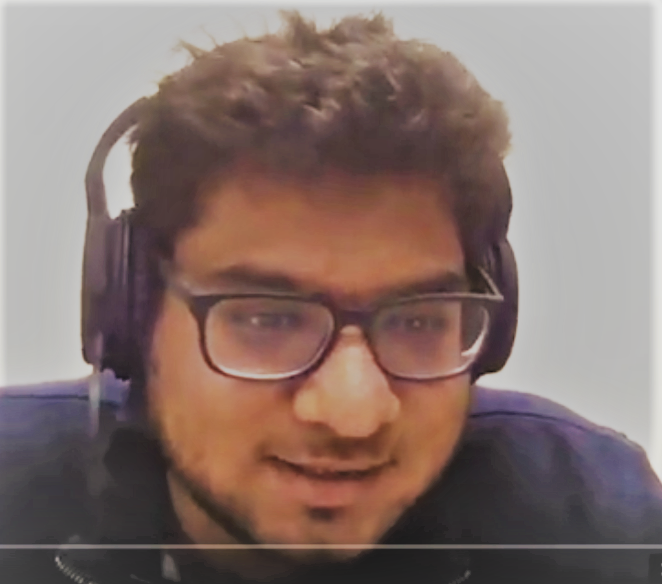
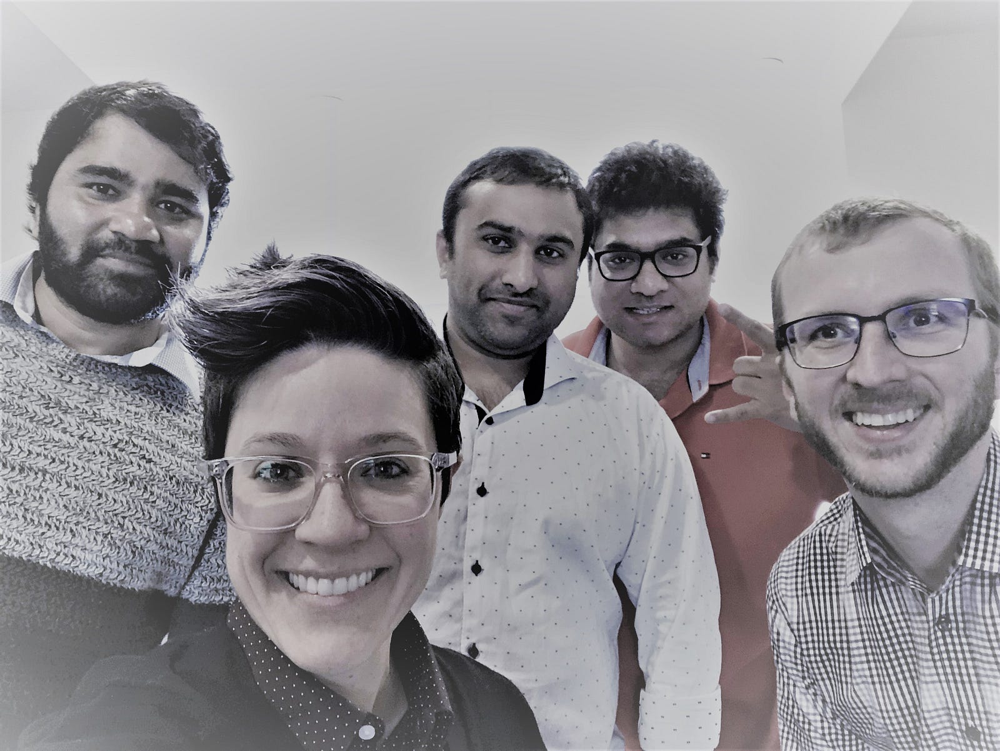
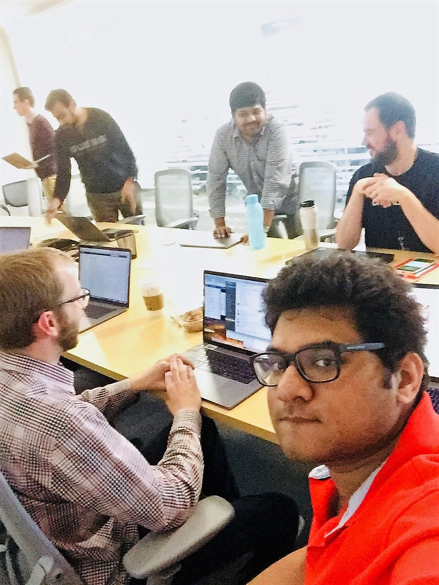
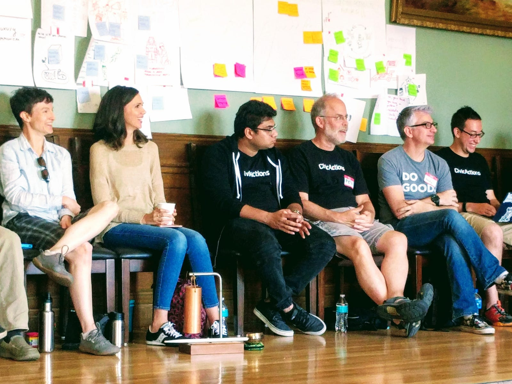
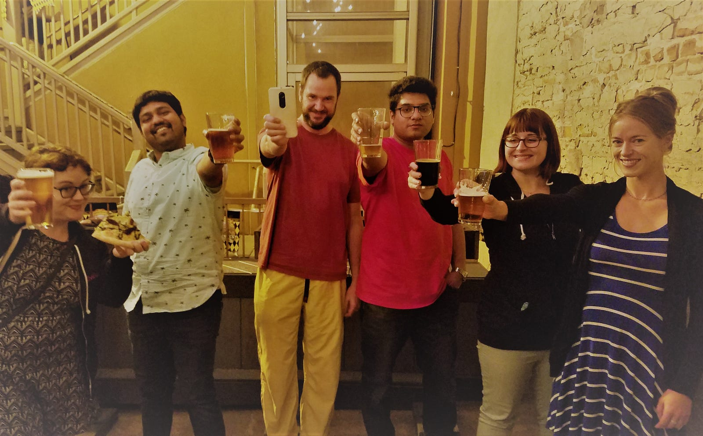
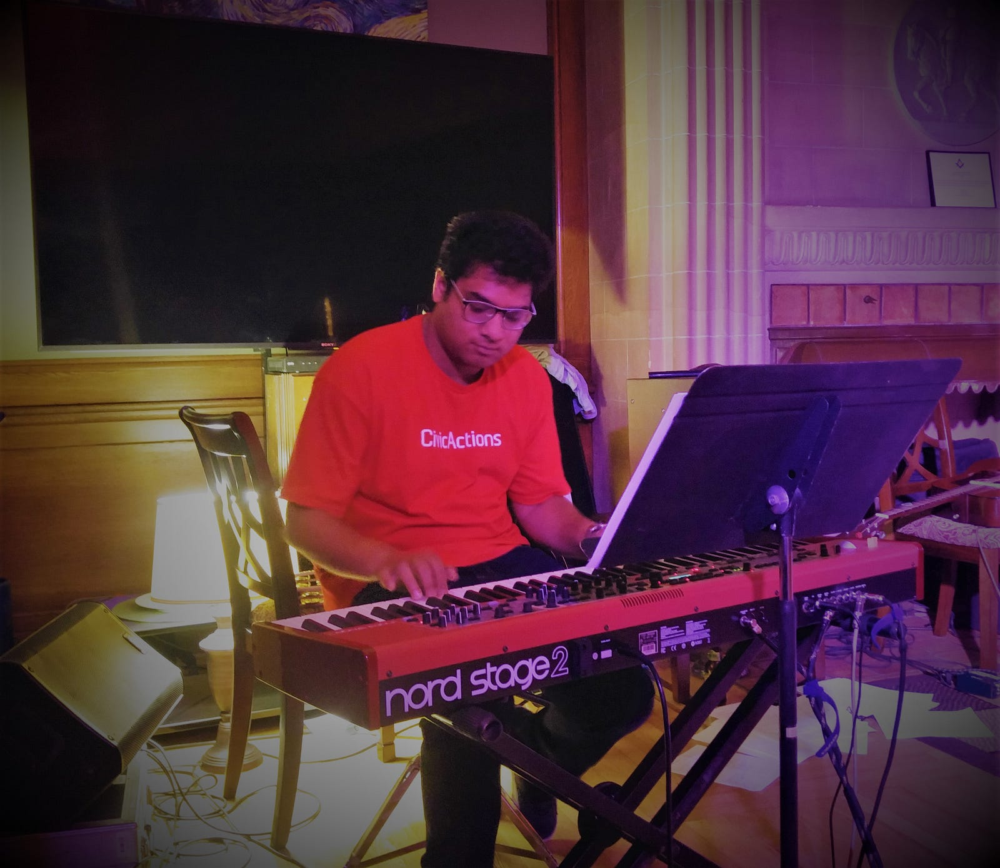

Arpit is a DevOps Engineer with a knack for positivity who is part of CivicActions’ growth into onsite work with government agencies. In this interview he shares his experience as an embedded team member on a high-profile state project, along with his take on the coolest automation tools around.

What’s your role at CivicActions and what are you working on?
I was hired at CivicActions along with several other engineers when the company was competing for a DevOps contract with the State of California. There’s a collaboration of state agencies — Child Welfare Digital Services (CWDS) — that is working with vendors to build a brand-new digital child welfare platform. It’s a huge project, and I’m part of the team that provides DevOps services — tying development and operations together with a big focus on automation, security, and environment enhancement.
“By working with government I have the satisfaction of knowing my efforts will benefit citizens directly.”
I’m working onsite in Sacramento — the six of us that are from CivicActions collaborate with several engineers from the state and other vendors. Each one of us brings a different perspective and background. So we’re all constantly learning from one another, and combining our experience to solve problems in creative ways.
What’s it like working daily onsite for a state project?
CivicActions is mainly a remote team, so in some ways it feels more like I am working for the state since I am there every day! But it’s a very good project to be part of. The state is ready to invest in the latest technologies, and there is a lot of energy and innovation — so working at CWDS feels more like working for a startup. It’s a very optimistic vibe. I also love helping people, and by working with government I have the satisfaction of knowing my efforts will benefit citizens directly.

How does this public sector project differ from commercial projects you’ve worked on?
Even though CWDS is super innovative, it’s still a government agency, so there are some differences that take some getting used to. For example, there are more security rules than you normally face in commercial projects. The sensitive data about the users of the system (the kids and their caretakers) must be protected, so there are access restrictions inside our project management system.
Also, the procurement process is more complicated than in the private sector. It can take months to go through all the teams and legal departments before you get a decision about a new tool or license. Some people complain, but it’s just part of working with government right now. There is a lot of innovation going forward to make government more efficient, and I’m glad to be part of that process.

How did you become interested in DevOps?
Early in my career I became enchanted with cloud computing and virtual machines. It was amazing to me how systems can be configured by humans to handle huge amounts of data and thousands of users without a glitch. So the ideas behind that — automation, tweaking the systems to perform perfectly, making life easier for developers, reducing the need for human busy-work — led me to pursue DevOps. I am always asking how something can be automated to work better. And I love being part of building the future. These are the newest technologies in a field that is just starting to gain momentum. DevOps is especially new for the public sector.
“I am always asking how something can be automated to work better.”
What technologies are you most excited about right now?
Ansible for configuration and automation — I love how easy it is to automate tasks by writing simple Ansible scripts! And the code format is easy to learn and understand.
Jenkins for CI / CD. It’s a wonderful tool for orchestration of code and deployments, and it has a plug-in to solve almost any problem you can name. We’re using Docker to build portable applications, and I’m really excited about implementing Kubernetes soon, which will help us manage our infrastructure components more robustly.
I’m also in love with GNU/ Linux as the best OS in the industry. You wouldn’t believe the things that are possible in the world of computers if you know how to manipulate the operating system. Linux gives you access to play around with almost anything without restrictions. Plus, once you go command line, GUI is just boring!
Python is my favorite language — I like how it has libraries for any task I want to do. The code is easy to understand and you can use it to automate almost anything. I’ve used Python in conjunction with Ansible to generate a cool monitoring dashboard that is being used across the CWDS project to check application status and versions.
We’re building amazing modern services using these tools. There is something new to learn for everyone on the project, regardless of experience.

How do you organize your work day?
We start the day with a stand-up meeting, and that’s where we divide up the work and see who has availability to work on each task. It’s great for transparency because we can always see what progress has been made and what needs to be done next. There’s a good understanding about how the team is functioning as a whole — we trust one another’s work and abilities.
That sounds like a strong agile culture.
It definitely is — everyone knows their own responsibility. No one is peering over your shoulder to constantly supervise or ask what you’re working on. You’re free to work independently on the stories that are assigned to you, and then report back to the group. At stand-up we prioritize the stories and make sure everyone has a proper workload.
So it’s possible to maintain a good work/life balance?
Well, there are always some crazy times on any project, but yes, we’re good at recognizing who can take on more workload and who needs a bit of a break. That’s a part of CivicActions culture we’ve been able to share with the team here at CWDS.
“There’s a good understanding about how the team is functioning as a whole — we trust one another’s work and abilities.”
CivicActions really emphasizes balance in all aspects of life, and there is a practice where they report “balance scores” at meetings. These scores are just a quick update, on a scale of 1 -10, to let your team know how well you’re handling all your priorities, both personal and professional. This lets you know “who to bother” during the day if you need something, or who might need more space. We brought this practice with us to CWDS and it’s really caught on. Everyone appreciates it.

Speaking of balance, how do you like to relax when you’re not at work?
I go to a tennis club almost every day after work. But I’ve also been trying to focus more on playing the keyboard. I used to be very fast, but I’ve fallen out of practice. If I put in enough effort, I hope to be able to jam with the group at the CivicActions retreat in Boulder this fall. Our annual retreat is a chance to meet in person with all our remote teammates, and we have a music hootenanny that’s lots of fun.

What’s the story of how you found CivicActions?
I was looking for something new, and actually joined the team when CivicActions was competing for a different contract on the CWDS project — it was for development work. We didn’t win that contract, but the state interviewers really liked my answers for the DevOps questions. So I stayed in touch with CivicActions and we were soon awarded the DevOps contract. So I guess everything happens for the best!
“This job is better than I ever expected to get, in terms of the work culture and the kind of technologies we get to use every day.”
This job is better than I ever expected to get, in terms of the work culture and the kind of technologies we get to use every day. CivicActions stands out because the people are so good — they support the DevOps team here in every way. I can’t wait to see everyone in Boulder!
From the team
“Arpit is a good listener. He is super persistent and doesn’t shy away from the toughest challenges. He just puts his head down and makes it look easy.” Rasim, Director of Release Management
“Arpit has a great sense of team awareness. He takes time to look beyond the technical requirements and understand the human element.” Sam, Project Manager
“Arpit is consciously attentive and aware.” Alaine, Director of Agile Digital Services
Want to join Arpit and the rest of CivicActions in building the future of digital government services? Check out open positions here.